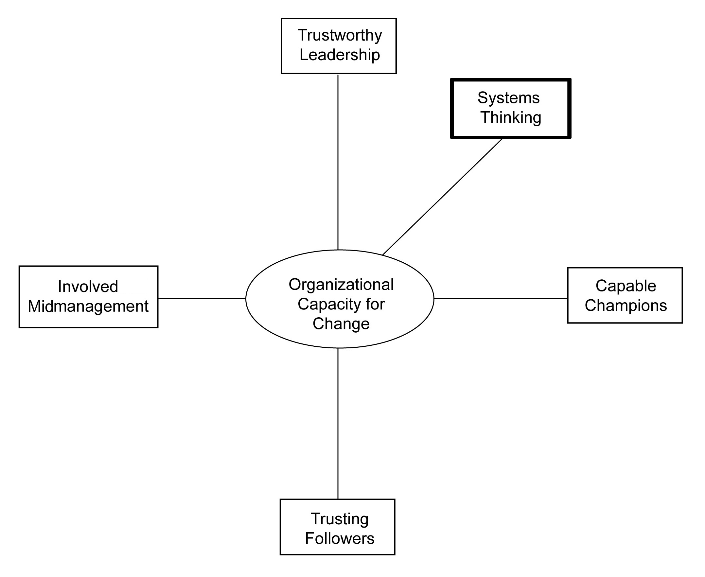

A system must have an aim. Without an aim, there is no system. A system must be managed. The secret is cooperation between components toward the aim of the organization.
W. Edwards Deming
No problem can ever be solved with the consciousness that created it. We must learn to see the world anew.
Albert Einstein
W. Edwards Deming, the guru of total quality management, defines a systemA network of interdependent components that work together to accomplish a common goal. as “a network of interdependent components that work together to try to accomplish a common aim.”Deming (1986), p. 32. A pile of sand is technically not a system since the removal of a single component (i.e., a grain of sand) does not change the functioning of the collectivity (i.e., the pile). Furthermore, there is no “aim” designed into or emanating from the pile.
In contrast, a car is a system that comprises thousands of parts that all work together to provide transportation to a driver. If you remove the gasoline tank, then the car fails to perform its aim properly. In this case, the aim is designed into the car by the automobile design team, so the car is a mechanical, not a living, system.
Living systems are the most complex forms of systems. What makes them unique is that they interact with their environment and are self-organizing. As a result, the aim is not designed in but constantly evolving over time. Living systems can be something as simple as a cell, to something as complex as the European Union. Therefore, one of the ways of determining whether a collectivity is a system or not is (a) the interacting parts possess a central aim or purpose and (b) the removal of a component changes the functioning of the overall system.Miller (1978).
Systems thinking builds on our understanding of natural and man-made systems. It emphasizes that we need to understand how the whole affects its parts and how the parts affect the whole. This is different from traditional thinking, which assumes that the parts are independent of the whole. It is a set of techniques and an overarching mind-set that “problems” can best be solved by considering the component’s relationship to the overall system and its environment.
This type of thinking is revolutionizing many fields of study. For example, we now know that the pain that you have in your back may be caused by one leg being longer than the other so that the skeletal subsystem is skewed. In other words, close examination of a person’s back will reveal the symptoms (i.e., back pain), but not the causes (i.e., leg length differences). In traditional thinking, diagnosis of back pain focuses exclusively on the pained area of the body.
Systems thinkers tell us that there are two types of systems—closed and open systems. Closed systemsSystems that are relatively independent of their environment. function as systems relatively independent of their environment; open systemsSystems that are constantly exchanging material, energy, and information with their environment. are constantly exchanging material, energy, and information with their environment. An example of a closed system is the circulatory system of a fish versus mollusks. In fish (and other vertebrates), the blood circulates within vessels of different lengths and wall thicknesses, so its circulatory system is relatively closed to the rest of its body cavities. In mollusks (and most invertebrates), there are no vessels and the blood circulates within the tissues of the entire body cavity. The key notion for our purposes is the fact that system openness is a relative state, not an absolute state.
Sometimes the components or elements of a system function as subsystems within a larger system. A subsystemA collection of components or elements within a larger system that has a smaller aim. is a collection of components or elements with a smaller aim within the larger system. Hence, there are various levels of systems that operate interdependently. A prime example here would be the financial subsystem’s impact on and relationship with the larger national economic system.
Systems thinking is revolutionizing the organizational sciences, just as it is challenging all the other sciences. If we consider the organization to be a living system, then organizational problems and opportunities are viewed in an entirely new way. For example, a high-performing individual might be creating dysfunction within his or her work group. Similarly, an award-winning department might be the cause of organizational decline. And a financially successful organization could be polluting its natural environment.
Interestingly, systems thinking can lead to principles that transcend a particular area of study. For example, the Japanese often study natural systems (i.e., a river) to guide them in the design and improvement of interorganizational systems (i.e., a supply chain). Similarly, Margaret Wheatley has used systems insights from the study of quantum mechanics to better understand the proper functioning of organizational systems.Wheatley (2006).
Systems thinking requires us to consider the subsystems and components within an organization, and the organization as a subsystem within its larger environment. Organizations vary in terms of their levels of openness to the environment, and systems thinking suggests that a balance must be struck between maintaining some boundaries with the environment and assuring that those boundaries are somewhat porous. A classic systems problem is that the organization is not listening enough to its current customers (it is too closed), or that it is listening too much to its current customers, or what Clayton Christensen calls the innovator’s dilemma.Christensen (1997).
Systems thinking also requires us to consider the aim of the system and to what degree the members of the organization, or larger society, align with the overarching aim. Chris Argyris eloquently describes how individuals often have both espoused aims and actual aims; and how the key to individual health and productivity involves minimizing the distance between what is espoused and what is actual.Argyris (1993).
The stakeholder versus stockholder perspective of organizations also deals with the aim of the organizational system. For some managers and theorists, maximizing shareholder wealth is the sole purpose of the corporation, and by doing so the overall economic system, of which the organization is a part, benefits. However, other managers and theorists suggest that there are multiple social actors inside and outside the organization with a “stake” in the functioning of the organization, and that no one stakeholder is more important than any other. Systems thinking enable managers to sort out this difficult, value-laden issue.
Peter Senge was a pioneer in helping us to apply systems thinking to organizational change. He emphasized the central role of organizational learning, and created frameworks and tools for diagnosing organizational dysfunction and enhancing organizational functioning. In particular, he emphasized some of the organizational learning disabilities, or delusions, that must be acknowledged if the organization wants to change and survive.
Senge emphasizes that we all have mental modelsDeeply ingrained assumptions, generalizations, or pictures or images that influence how we understand the world and how we behave. In an organization, capital is often tied up with particular models. of how things work. When our organizations are not functioning properly, he suggests that we need to reconsider our individual and collective mental models. This is not easy to do because
mental models are deeply ingrained assumptions, generalizations, or even picture or images that influence how we understand the world and how we take action. Very often, we are not consciously aware of our mental models or the effects that they have on our behavior.Senge (1990), p. 8.
Therefore, change-capable organizations are conscious of their shared mental models, and are adept in revising those mental models when they no longer work properly.
The boiled frog delusion is a commonly told story, but rarely do living systems learn from its message. If you place a frog in a pot of boiling water, it will immediately hop out. But if you carefully place the frog in a pot containing room-temperature water, and gradually raise the temperature of the water, the frog will not notice the temperature increase and will stay in the water even though he is free to jump out. The reason for this is that the frog’s internal mechanism for survival is geared to deal with sudden changes to his environment, not gradual ones. The same applies to our organizations.Senge (1990), p. 23.
In many ways, our organizations change dramatically and well when the environment shifts in radical ways. Think of how individuals and organizations in New York City demonstrated magnificent performance in the advent of the 9/11 terrorist attack, which was violent and sudden and dramatic. However, creeping problems like slowly eroding market share, insidious environmental pollution, steady quality declines, and turnover by some of the key employees of an organization are often not noticed. The environment is turning up the heat slowly but surely on many of our organizations, but it is happening so gradually that we do not notice or take action to correct this trend.
Most learning for individuals, organizational units, and overall organizations comes from reflection on the experienced effects that are the result of certain actions. For example, a common lesson learned within organizations is “When I deliver requested results on time and within budget, my project continues being funded.” Or at the subunit level, “When our sales unit aggressively pursues new customers, sales grow for the company.” And at the organizational level, “When our organization hits its earnings per share goal, our stock price rises.”
However, what happens when there is not a direct effect of our actions on organizational outcomes? Many individuals recognize that they can do their best, but the project gets canceled for other reasons. And some sales units pursue customers aggressively and sales still fall. And some organizations hit their earnings guidance, but the stock price still continues to fall. When learning from direct experience doesn’t work, Senge suggests that we need to think more systemically about cause and effect. He states, “Herein lies the core learning dilemma that confronts organizations: We learn best from experience but we never directly experience the consequences of many of our most important decisions.”Senge (1990), p. 25.
When an individual or subunit within an organization is not meeting performance standards, the traditional response by the individual or subunit is to “work harder.” Sometimes this works; often it does not. When this does not work, Senge points out that often the system is the problem, rather than the individual or individuals who are working within the system. Specifically, he states,
The systems perspective tells us that we must look beyond individual mistakes or bad luck to understand important problems…We must look into the underlying structures which shape individual actions and create the conditions where types of events become likely.Senge (1990), pp. 42–43.
As in previous chapters, this concluding section lays out seven practices that are consistent with the chapter’s focus, systems thinking, which can make your organization more change capable.
Unintended side effects are common with pharmaceuticals, so why should we be surprised when the same thing happens during or after an organizational change initiative is launched? Organizations are complex, interdependent social systems. Like a water balloon, when we push on one part of it, another part changes. While anticipating the side effects of a change initiative is not easy to do, some effort should be made to envision what those ripple effects might be.
Similar to scenario analysis of future environmental states,Schwartz (1991). by envisioning potential outcomes in advance we are more prepared to deal with the outcomes that may result. Furthermore, by trying to anticipate future unintended consequences, sponsors of the change and the change agents are more attentive to the unfolding nature of the change initiative and more likely to learn from the experience.Schriefer and Sales (2006). It is important to remember, however, that cause and effect are often not closely related in time and space when trying to change a complex system. Consequently, analogies can be a useful tool for anticipating unintended consequences of change. Another tool for anticipating the effects of a change initiative are computerized simulations.Ziegenfuss and Bentley (2000).
One systems thinking tool that can be instrumental in anticipating ripple effects are causal loop diagramsA systems thinking tool that can help an organization visualize in advance the potential outcomes of change..Hebel (2007). Diagrams help us to visualize how the change might unfold. Causal loops remind us that there are feedback linkages within systems that can dampen or amplify the effects of initiatives. In sum, anticipating ripple effects is more art than science, but the effort will ensure that unintended side effects are avoided and will deepen the change sponsors’ understanding of the systemic nature of change.
There are no simple rules for finding high-leverage changes, but there are ways of thinking that make it more likely. Learning to see underlying “structures” rather than “events” is a starting point…Thinking in terms of processes of change rather than “snapshots” is another.Senge (1990), p. 65.
Malcolm Gladwell wrote a best-selling book on this very topic and it was given the graphic term “tipping points.” Gladwell argues that “the world may seem like an immovable, implacable place. It is not. With the slightest push—in just the right place—it can be tipped.”Gladwell (2002), p. 259.
Gladwell also asserts that ideas, products, messages, and behaviors can spread just like viruses do. Similar to how the flu attacks kids in schools each winter, the small changes that tip the system must be contagious; they should multiply rapidly; and the contagion should spread relatively quickly through a population within a particular system. Learning how your system has tipped in the past, and understanding who or what was involved can be an invaluable insight into thinking systemically about your organization.
Systemic change often involves multiple feedback loopsA type of message assessment that is essential in uncovering what was heard, what was remembered, and what new behaviors, if any, have resulted. Feedback loops are essential to change initiatives because they provide information that will allow change designers to broaden or refine their perspective. and drivers of change. As such, focusing on a single causal variable is often not helpful. For example, I often hear executives argue that “it is all about the right reward systems—get your rewards right and everything falls into place.” While reward systems are very important and a key part of organizational change capability, they are a subsystem within a larger system that has many complex and interacting parts.
Barry Oshry writes insightfully about “spatial” and “temporal” blindness within an organizational system. Spatial blindness is about seeing the part without seeing the whole. Temporal blindness is about seeing the present without the past. Both forms of blindness need to be overcome in order to better understand cause and effect within a system. Oshry recommends that people from various parts of the system need to periodically take time out to reflect collectively so as to transcend their blind spots.Oshry (1996), p. 27.
Change is difficult and often painful. People generally will not give up an idea, behavior, or mental model without latching onto something to replace it. The something that they need to hold onto is the shared vision of the future. In their analysis of over 10,000 successful change initiatives in organizations, Jim Kouzes and Barry Posner found that the creation of an inspiring vision of the future was always present.Kouzes and Posner (2003). As Peter Senge notes, “When there is a genuine vision (as opposed to the all-too-familiar ‘vision statement’), people excel and learn, not because they are told to, but because they want to.”Senge (1990), p. 9. And Jim Collins and Gerry Porras point out that “a visionary company doesn’t simply balance between idealism and profitability; it seeks to be highly idealistic and highly profitable.”Collins and Porras (1994), p. 44. In sum, a compelling and well communicated vision is key to bringing about change within an organizational system, and this principle is central to systems thinking.
The definition of insanity is applying the same approach over and over again, and expecting new results—the same is true about mental models. When organizational changes don’t work or when an organization repeatedly fails to meet its performance expectations, sometimes the dominant mental model, or paradigm, within an organization is to blame. Changing this dominant mental model is not easy since political capital is often tied up with particular models. First-order systems changesChanges that involve refinement of a system within an existing mental model. involve refinement of the system within an existing mental model. Second-order systems changesChanges that involve the unlearning of a previous mental model and its replacement with a new and improved version. involve the unlearning of a previous mental model, and its replacement with a new and improved version. These changes do not occur on their own—second-order learning requires intention and focus on the history and identity of the overall system.Gharajedaghi, 2007.
Barry Oshry writes poetically about the “dance of the blind reflex.” This reflex is a generalization of the mental models of various parts of the organizational system. Oshry argues that top executives generally feel burdened by the unmanageable complexity for which they are responsible. Meanwhile, frontline workers at the bottom of the organizational hierarchy feel oppressed by insensitive higher-ups. Furthermore, middle managers feel torn and fractionated as they attempt to link the tops to the bottoms. Furthermore, customers feel righteously done-to (i.e., screwed) by an unresponsive system. Interestingly, none of the four groups of players mentioned see their part in creating any of the “dance” described here.Oshry (1996), p. 54. However, there is a way out of this problem. As Oshry notes,
We sometimes see the dance in others when they don’t see it in themselves; just as they see the dance in us when we are still blind to it. Each of us has the power to turn on the lights for others.Oshry (1996), p. 123.
Peter Vaill uses the metaphor of “permanent white water” as an analogy for the learning environment that most organizations currently find themselves in. He argues that “learning to reflect on our own learning” is a fundamental skill that is required for simple survival. Vaill argues that learning about oneself in interaction with the surrounding world is the key to changing our mental models. He further suggests that the personal attributes that make this all possible are the willingness to risk, to experiment, to learn from feedback, and above all, to enjoy the adventure.Vaill (1996), p. 156.
Dialogue aimed at understanding the organizational system is fundamental to enhancing systems thinking. This dialogue should involve top executives, middle managers, frontline workers, and customers at repeated intervals. Organizational systems gurus, such as Deming, Senge, and Oshry, all agree that the key to systemic thinking is to involve a wide variety of voices within the system talking and listening to each other. Town hall meetings, weekend retreats, and organizational intranets are a common and increasingly popular means of engaging in dialogue about the system.
When an individual or group within the system engages with another individual or group within the system that is “not normal”; new information is created within that system. External to the system, when an individual or group engages with individuals, groups, or other organizations that are not normal, new information is created between the systems. This new information can lead to energy and matter transfer that counteracts systemic entropy.
Intrasystemic opennessA situation in which two departments agree to collaborate on a project that includes mutual benefits to each. occurs when two departments agree to collaborate on a project that contains mutual benefits to each. “Open door” policies are clearly a step in the right direction. Even a simple act of going to lunch with someone you have never dined with before can reduce system entropy. Extrasystemic opennessA situation in which new employees are hired, external consultants are engaged, and individuals attend trade association meetings or external training sessions. occurs when new employees are hired, when external consultants are engaged, and when individuals attend trade association meetings or external training sessions. The human tendency to stick with the known and familiar and maintain routine must be challenged by the continual creation of new connections.
In sum, a systemic perspective is essential for making your organization change capable. Systems thinking is an infrastructure within which all change takes place. Figure 7.1 "The Fifth Dimension of Organizational Capacity for Change: Systems Thinking" contains a graphic summarizing this fifth dimension of organizational capacity for change.
Figure 7.1 The Fifth Dimension of Organizational Capacity for Change: Systems Thinking
